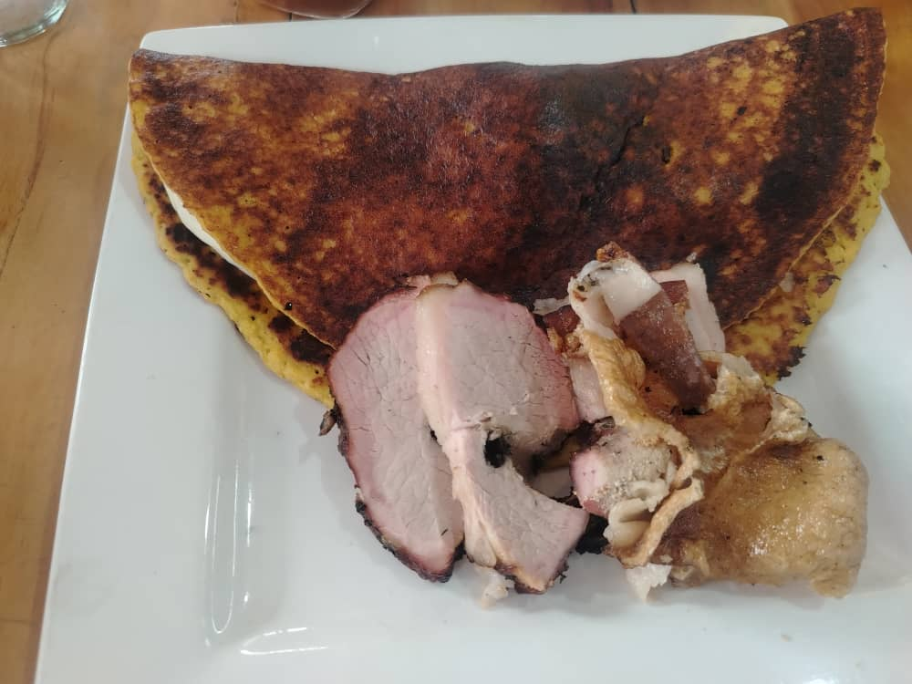

#1 en Comida Criolla y Cachama Frita en Barinas - Tradición Llanera

🌟 NUESTRA ESPECIALIDAD ABSOLUTA
En La Cachamita de Oro hemos perfeccionado el arte de preparar la cachama frita hasta convertirla en una verdadera joya culinaria. Nuestra Cachama Dorada no es simplemente un plato, es una experiencia gastronómica que captura la esencia misma de la comida criolla venezolana con el toque único de la tradición llanera de Barinas.
🍽️ DESCRIPCIÓN DEL PLATO
Imagina un pescado entero, fresco del río, con una piel tan crujiente que suena al cortarla, y una carne blanca, jugosa y deshebrada que se desprende con suavidad. Así es nuestra Cachama Dorada, el plato que nos dio nuestro nombre y que se ha convertido en el favorito de quienes buscan comida criolla cerca de mi ubicación en Barinas.
🎯 INGREDIENTES SELECTOS:
👨🍳 PREPARACIÓN TRADICIONAL:
Nuestros chefs llaneros siguen un ritual de tres etapas: Limpieza y marinado por 2 horas con especias secretas, Rebozado ligero con harina de maíz y Fritura en punto exacto hasta lograr el dorado perfecto.
🔥 ¿POR QUÉ ES ESPECIAL NUESTRA CACHAMA DORADA?
1. ORIGEN GARANTIZADO: Usamos exclusivamente cachama de criaderos locales de Barinas, alimentada naturalmente.
2. TÉCNICA PERFECTA: La fritura a 180°C crea una piel extremadamente crujiente mientras mantiene la carne jugosa.
3. PRESENTACIÓN ESPECTACULAR: Servida entera en una tabla de madera, decorada con tajadas doradas y guasacaca.
4. SABOR ÚNICO: El equilibrio perfecto entre lo crujiente de la piel, lo jugoso de la carne y el toque especial de nuestro marinado.
"La Cachama Dorada de La Cachamita de Oro no es solo nuestro plato estrella, es un símbolo de la gastronomía llanera. ¡Ven y descubre por qué somos La Cachamita de Oro! 🐟✨"

🌽 NUESTRA TRADICIÓN DORADA
En La Cachamita de Oro rescatamos la auténtica esencia de la cachapa venezolana, ese manjar llanero que combina la dulzura natural del maíz con la cremosidad única del queso de mano. No es solo un acompañamiento, es una experiencia gastronómica que define la comida criolla barinesa en su máxima expresión.
🍽️ DESCRIPCIÓN DEL PLATO
Imagina una tortilla dorada de maíz tierno, ligeramente dulce, con ese aroma característico que solo el budare caliente puede darle, rellena de queso de mano que se derrite al contacto. Así es nuestra Cachapa Venezolana Llanera, el acompañamiento perfecto o plato principal que buscas cuando piensas en comida criolla cerca de mi ubicación en Barinas.
🎯 INGREDIENTES SELECTOS:
👨🍳 PREPARACIÓN TRADICIONAL:
Nuestras cocineras mantienen viva la tradición: Molienda del maíz en piedra, Mezcla y reposo de la masa, Cocción en budare y Relleno al instante con queso derritiéndose.
🔥 ¿POR QUÉ ES ESPECIAL NUESTRA CACHAPA?
1. MAÍZ 100% NATURAL: Usamos exclusivamente maíz tierno de cultivos locales, nunca enlatado.
2. QUESO DE MANO AUTÉNTICO: Nuestro queso proviene de queserías artesanales de la región.
3. TÉCNICA PERFECTA: Cocción en budare de hierro heredado de generaciones.
4. VERSATILIDAD ÚNICA: Desde la clásica con queso hasta la rellena de cochino frito.
📍 VARIEDADES DISPONIBLES:
Clásicas: Cachapa con Queso, Cachapa con Cochino Frito, Cachapa Reina Pepiada.
Especiales: Cachapa Llanera Completa, Cachapa Mixta, "Tu Cachapa" Personalizada.
📞 ¿CÓMO PEDIR? La Caramuca 5201, Barinas | 📱 0426-4562796. Disponible en local y a domicilio.

🥩 EL REY DE LA PARRILLA
En La Cachamita de Oro dominamos el arte ancestral de la carne asada llanera, esa técnica que transforma los mejores cortes en una experiencia jugosa, ahumada y llena de sabor. No es simplemente carne a la parrilla, es la esencia misma de la comida criolla barinesa en su versión más auténtica.
🍽️ DESCRIPCIÓN DEL PLATO
Visualiza un corte premium de carne de res, marinado por horas con especias secretas, asado lentamente sobre carbón vegetal hasta alcanzar ese punto perfecto donde la costra exterior está caramelizada y el interior conserva su jugosidad. Así es nuestra Carne Asada Llanera, el plato que buscas cuando anhelas la auténtica parrillada de carne en Barinas.
🎯 INGREDIENTES SELECTOS:
👨🍳 PREPARACIÓN TRADICIONAL:
Nuestros parrilleros son maestros del fuego: Selección y marinado de 12 horas mínimo, Preparación del carbón con madera de guayabo, Asado lento y Reposo para redistribución de jugos.
🔥 ¿POR QUÉ ES ESPECIAL NUESTRA CARNE ASADA?
1. CORTES SELECCIONADOS: Trabajamos directamente con ganaderos de Barinas.
2. TÉCNICA LLANERA PURA: Usamos carbón vegetal, no gas, logrando sabor ahumado inigualable.
3. MARINADO SECRETO: Mezcla de especias transmitida por generaciones.
4. PUNTO PERFECTO: Cada corte se sirve en su punto exacto.
📍 VARIEDADES DISPONIBLES:
Individuales: Carne Asada Tradicional, Arrachera Especial, Costilla BBQ.
Para compartir: Parrillada Llanera (2-3 pers), Asado Familiar (4-6 pers), Paquete Carnívoro.
📞 ¿CÓMO PEDIR? La Caramuca 5201, Barinas | 📱 0426-4562796. Parrilladas disponibles todos los días.

🐷 LA TRADICIÓN DORADA
En La Cachamita de Oro rescatamos la técnica ancestral del cochino frito venezolano, ese plato que combina la jugosidad de la carne de cerdo con una piel tan crujiente que se convierte en experiencia sensorial. No es simplemente cerdo frito, es patrimonio de la gastronomía criolla de Barinas.
🍽️ DESCRIPCIÓN DEL PLATO
Imagina trozos generosos de cerdo, marinados en hierbas locales, fritos a la temperatura perfecta hasta lograr esa piel dorada que cruje al primer bocado, mientras la carne interior permanece jugosa y llena de sabor. Así es nuestro Cochino Frito Venezolano, el plato que define la comida criolla con carne en su máxima expresión.
🎯 INGREDIENTES SELECTOS:
👨🍳 PREPARACIÓN TRADICIONAL:
Proceso artesanal en 4 etapas: Corte y limpieza, Marinado prolongado (24h), Secado natural para piel crujiente y Doble fritura técnica secreta.
🔥 ¿POR QUÉ ES ESPECIAL NUESTRO COCHINO FRITO?
1. CERDO LOCAL GARANTIZADO: Sin hormonas, alimentación natural.
2. TÉCNICA DE DOBLE FRITURA: Piel extremadamente crujiente sin quemarse.
3. MARINADO DE 24 HORAS: Sabores penetran hasta el hueso.
4. EQUILIBRIO PERFECTO: Crujiente por fuera, jugoso por dentro.
📍 VARIEDADES DISPONIBLES:
Individuales: Cochino Frito Clásico, Costillas fritas, Panceta Crujiente.
Para compartir: Tabla de Cochino Frito (2-3 pers), Combo Familiar, Mega Porción.
Combos Especiales: Cochino + Cachapa, Combo Llanero.
📞 ¿CÓMO PEDIR? La Caramuca 5201, Barinas | 📱 0426-4562796. Disponible todo el día.

🦐 EL SABOR DEL MAR EN BARINAS
En La Cachamita de Oro desafiamos la geografía para traer lo mejor del mar a la mesa llanera. Nuestra marisquería criolla combina la frescura de pescados y mariscos con las técnicas y sabores de la cocina venezolana, creando platos únicos donde el llano se encuentra con el océano.
🍽️ DESCRIPCIÓN DE NUESTRA MARISQUERÍA
Imagina camarones gigantes salteados al ajillo, pescados frescos a la plancha con salsa criolla, calamares tiernos en su tinta, y mezclas de mariscos que explotan sabor en cada bocado. Así es nuestra propuesta de marisquería, la alternativa perfecta cuando buscas pescados y mariscos en Barinas con sazón local.
🎯 INGREDIENTES SELECTOS:
👨🍳 PREPARACIÓN ESPECIALIZADA:
Selección diaria, Limpieza profesional sin arenas, Cocción precisa y Sazonado criollo (el toque llanero).
🔥 ¿POR QUÉ ES ESPECIAL NUESTRA MARISQUERÍA?
1. FRESCURA GARANTIZADA: Recibimos pescados y mariscos diariamente.
2. TÉCNICAS HÍBRIDAS: Método tradicional con sazón criolla.
3. VARIEDAD CONSTANTE: Menú rota según disponibilidad.
4. PARA TODOS LOS GUSTOS: Desde simples hasta elaborados.
📍 PLATOS ESTRELLA:
Pescados: Pescado a la Plancha Criolla, Filete de Corvina al Ajillo, Pargo Entero Frito.
Mariscos: Camarones al Ajillo, Calamares en su Tinta, Mejillones a la Marinera.
Combinados: Mariscada Criolla, Paella Llanera, Cazuela de Mariscos.
📞 ¿CÓMO PEDIR TU MARISCADA? La Caramuca 5201, Barinas | 📱 0426-4562796. Pescados y mariscos frescos todos los días.
El secreto está en la materia prima local
Seleccionamos cuidadosamente cada producto. Desde el pescado fresco de río hasta las carnes premium de nuestros llanos. Nuestros vegetales y especias son 100% locales, garantizando frescura y ese sabor auténtico que nos distingue en Barinas.

De río, diario

Corte selecto
100% Natural

Aromáticas locales
La mejor parrillada criolla Barinas y más
Queso blanco llanero
Crujientes y doradas
Carne mechada y caraotas
Con queso de mano

Marisquería familiar Barinas
Salteados con vino blanco

Filete de corvina
Porción generosa completa
Estilo americano
Crujiente tradicional

La bandera venezolana: carne, caraotas, arroz y tajadas.

Carne de res en salsa oscura de papelón y especias. Tradición de domingo.
Descubre nuestra cocina, ambiente y preparaciones
Lleva la calidad de nuestra parrilla a tu casa
El corte tradicional llanero para asar
Jugosa y perfecta para la parrilla
Con hueso, llena de sabor
Ternura y jugosidad garantizada
Corte premium de máxima calidad
Tradición crujiente y dorada
Especial para ocasiones
Variedad de cortes seleccionados
Para 15-20 personas (Eventos)


Descubre la historia y sabor detrás de cada uno de nuestros platos
En el corazón de los llanos venezolanos, la comida criolla no es solo alimento, es un ritual de identidad. En Barinas, nuestros platos reflejan la generosidad de la tierra y el río. La cocina criolla que servimos en La Cachamita de Oro se distingue por el uso intensivo de vegetales de la huerta local, como la yuca, el plátano y la auyama, combinados con carnes y pescados de primera. Es una cocina que se comparte, que se vive en familia y que despierta los recuerdos de la abuela.
La carne asada en Barinas es una institución. No hablamos simplemente de poner carne al fuego, sino de un evento social donde el carbón y la carne se fusionan para crear una experiencia inolvidable. En nuestro restaurante, ofrecemos los mejores cortes: desde la jugosa aguja norteña hasta la imponente costilla. El secreto radica en el "sazonado llanero", una mezcla de especias que penetra la fibra antes de tocar la parrilla.
La cachapa es la dulce reina de nuestra mesa. Hecha con maíz tierno molido en piedra, nuestra cachapa venezolana en Barinas es una especialidad que brilla por sí sola. Su textura esponjosa y húmeda, combinada con la cremosidad del queso de mano fresco, crea un contraste de sabores irresistible. Es el acompañamiento perfecto para cualquier carne asada o un plato principal delicioso por sí solo.
Más que un local, somos un referente de la tradición gastronómica en La Caramuca. Restaurante La Cachamita de Oro se ha consolidado como el destino preferido para quienes buscan autenticidad y calidad. Nuestro compromiso va más allá de servir comida; buscamos crear memorias. Desde nuestra decoración que evoca el campo llanero hasta el servicio atento y cálido.
Sabemos que el antojo de un buen sancocho o una carne mechada no espera. Por eso, hemos facilitado que encuentres comida criolla cerca de tu ubicación. Con nuestra ubicación estratégica en La Caramuca y nuestro eficiente servicio de delivery, acortamos las distancias entre tus deseos gastronómicos y tu mesa.
"Cachamita de Oro" es más que un apodo, es nuestra marca de excelencia. Representa la búsqueda incansable de la perfección en cada plato que servimos, especialmente en nuestra estrella: la cachama. Este nombre resume nuestra filosofía: usar ingredientes dorados por el sol o el fuego, y transformarlos en tesoros culinarios.
El cochino frito es una tentación imposible de resistir. En Barinas, este plato se prepara con un respeto absoluto por la tradición: trozos de cerdo marinados, adobados y fritos hasta alcanzar un dorado perfecto que protege la jugosidad interior. La piel crujiente es el sello distintivo que tanto gusta a nuestros clientes.
Para los amantes del asado, la parrillada criolla es la opción definitiva. Imagina una tabla repleta de los mejores cortes de res, cerdo y pollo, todos asados al punto exacto sobre carbón vegetal. En Barinas, la parrillada es sinónimo de celebración y reuniones. En La Cachamita de Oro, armamos parrilladas pensadas para compartir.
Aunque somos famosos por nuestra cachama de río, nuestra marisquería también brilla con luz propia. Entendemos que en Barinas se ama el pescado, por lo que ofrecemos una selección de frutos del mar frescos que viajan directamente hasta nuestra cocina. Desde camarones al ajillo hasta mojarras fritas y ceviches refrescantes.
Disfrutar de una carne asada en la comodidad de tu hogar es un lujo que ponemos a tu alcance. Nuestro servicio de carne asada a domicilio en Barinas está diseñado para preservar la calidad del plato hasta el último momento. Utilizamos envases térmicos especiales que mantienen el calor y el jugo de la carne.
Si te preguntas "dónde comer cachama frita" y encontrar verdadera calidad, la respuesta es simple: La Cachamita de Oro. Hemos perfeccionado este plato hasta convertirlo en una leyenda local. No solo servimos pescado, servimos la experiencia completa: el ambiente, el servicio y los acompañamientos que elevan la cachama de un simple plato a un banquete.
Ubicarnos en La Caramuca es orgullo para nosotros. Esta zona de Barinas es conocida por su calidez y su gente, valores que reflejamos en nuestro servicio. "La Caramuca restaurante" es una dirección que evoca buen comer y ambiente familiar. Hemos creado un espacio que se integra con la comunidad.
El dúo clásico por excelencia. En Barinas, la cachapa con queso se respeta. Utilizamos únicamente queso de mano fresco, ese queso suave, ligeramente salado y lleno de crema que se derrama sobre la cachapa caliente. El contraste entre el maíz dulce y el queso salado es la base de nuestra gastronomía.
El ritmo de vida actual exige soluciones rápidas sin sacrificar calidad. Nuestro servicio de comida criolla delivery en Barinas cumple con esa misión. Llevamos el completo sabor de nuestros guisados, carnes y sopas directamente a tu hogar u oficina. El proceso es simple: ordenas, preparamos con dedicación y un repartidor eficiente te la entrega caliente.
Para eventos grandes, bodas o celebraciones empresariales, nuestro buffet criollo es la elección ganadora. Ofrecemos una variedad extensa de platos que satisfacen todos los gustos: desde parrillas mixtas y sancochos hasta ensaladas frescas y postres caseros. Organizar un buffet criollo en Barinas con nosotros garantiza éxito.
La noche cobra vida con nuestra cena criolla. Cuando cae el sol, nuestro restaurante se ilumina con el brillo de las velas y el calidez de la comida recién hecha. La cena criolla en Barinas es un momento para relajarse y disfrutar de platos contundentes y reconfortantes como el asado negro o un buen pabellón.
Nos atrevemos a decirlo: servimos la mejor carne asada en Barinas. ¿Por qué? Porque controlamos todo el proceso, desde la selección de la ganadería hasta el corte en nuestra propia carnicería. Nuestros carniceros expertos saben exactamente qué corte necesita cada cliente para obtener la máxima jugosidad y sabor.
El concepto de "Restaurante Llanero" va más allá de la comida; es una atmósfera. En nuestro local, sentirás la música, verás la decoración y respirar el aire de los llanos. Hemos recreado un espacio que rinde homenaje a nuestras raíces. Ven a vivir la tradición en el Restaurante Llanero por excelencia en Barinas.
Aunque la cachama es la reina, nuestro reino gastronómico es vasto. Ofrecemos una amplia variedad de pescados y mariscos que enriquecen nuestra carta. Entendemos que la diversidad es clave para el paladar moderno. Por ello, integramos productos del mar con nuestras salsas criollas, creando fusiones deliciosas que sorprenden a comensales.
Ingredientes, Técnicas y Tradiciones
Pescado de agua dulce nativo, carne blanca, firme y de sabor suave.
Corte de res específico para asar, proveniente del lomo, con buen marmoleo.
Queso fresco llanero, semi-blando, esencial para cachapas.
Carne mechada, caraotas negras, arroz blanco y tajadas. La bandera nacional.
Cocción directa sobre fuego de carbón para lograr sabor ahumado.
Alma de la cocina criolla: cebolla, ajo, ají dulce y pimentón salteado.
La Caramuca 5201, Barinas, Estado Barinas
Dirección exacta Barinas: La Caramuca 5201.
Frente a la redoma principal. A 10 min del centro.
Teléfono: 0426-4562796
Email: contacto@cachamitadeorobarinas.com.ve